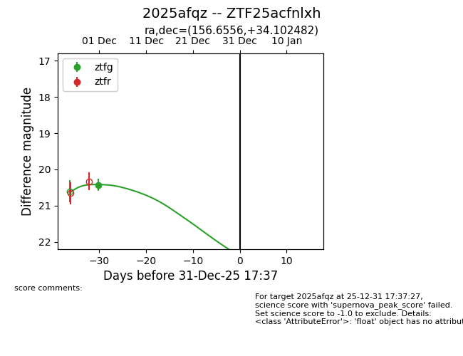
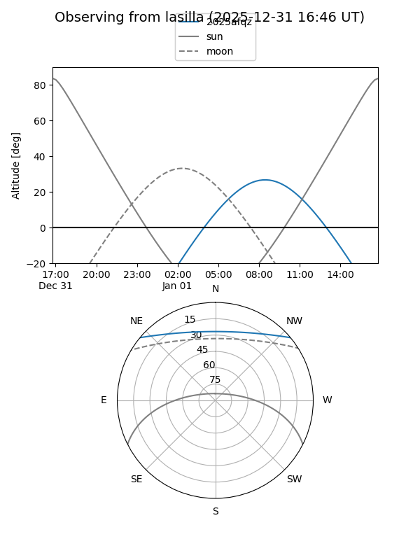
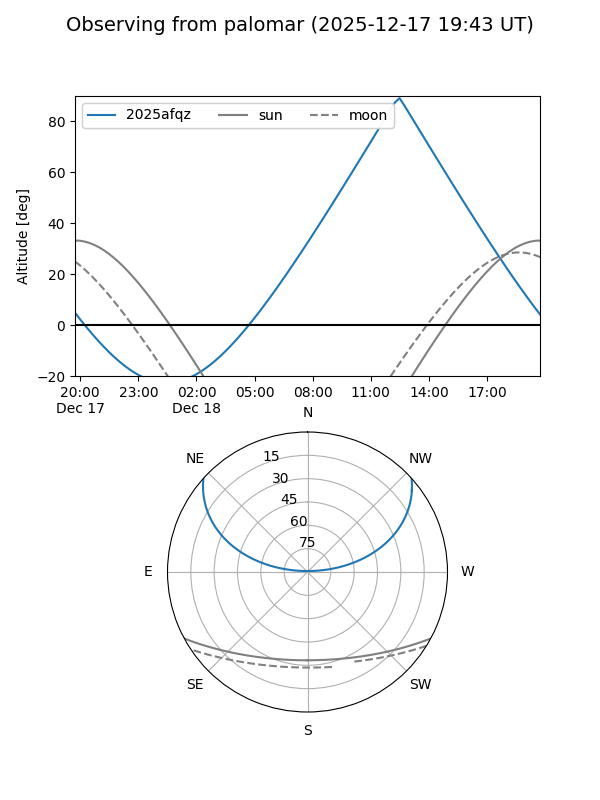
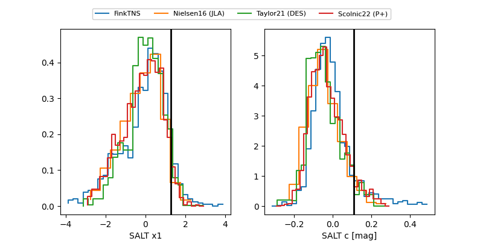

2025afqz
Target 2025afqz at 2025-12-31 16:59
Aliases and brokers:
FINK:
Lasair:
ALeRCE:
TNS:
YSE:
alt names
ZTF25acfnlxh (ztf,fink_ztf)
2025afqz (tns,yse)
Coordinates:
equatorial (ra, dec) = 156.6556,+34.10248
equatorial (HMS+DMS) = 10:26:37.33,+34:06:08.94
galactic (l, b) = (191.2630,+58.24562)
Flags:
Photometry:
last ztfg=20.43
1 ztfg detections
Lightcurve

Visibility


Additional plots
